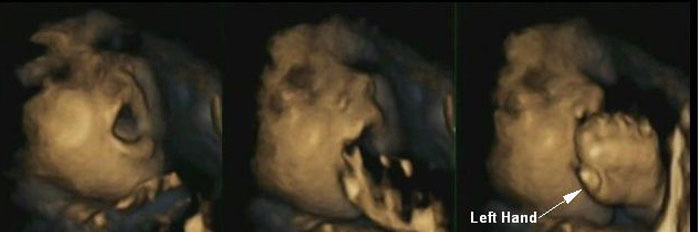
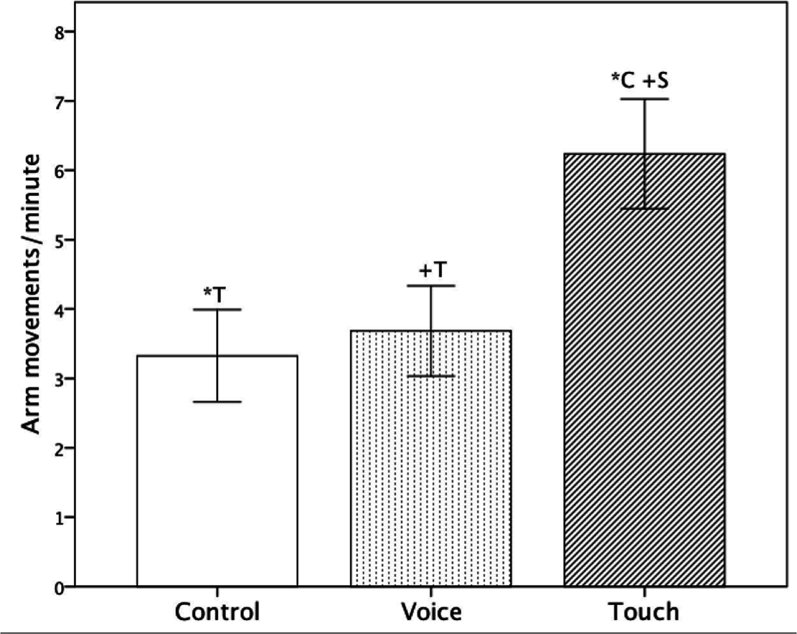
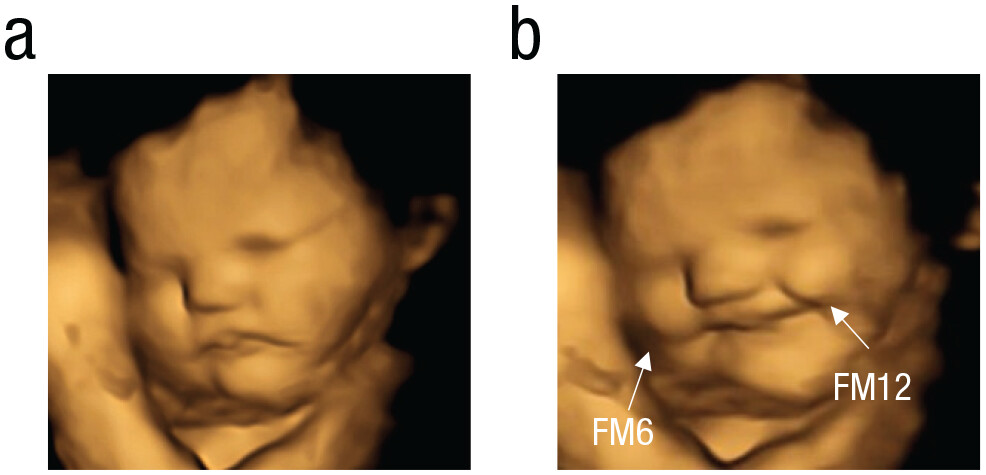
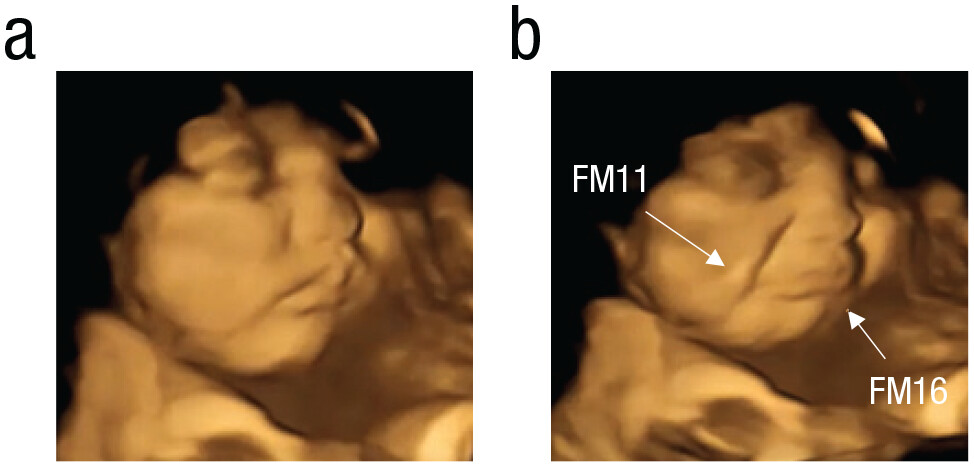
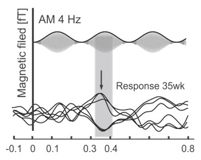
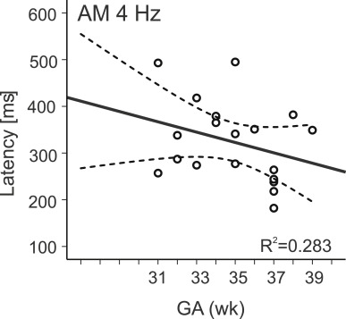

Prenatal Sensory and Cognitive Development
Sensory and cognitive functions in the fetus
Scuola di Psicologia, University of Florence
Development begins before birth
Birth is an important biological transition, but it is not the beginning of sensory and cognitive development.
During prenatal life, the nervous system progressively becomes able to:
- detect information from the body and the environment
- modify behavior in response to stimulation
- learn from repeated experience
- retain some information across time
The abilities observed in newborns therefore have important prenatal origins.
How can we study the fetus?
The fetus cannot provide verbal reports or perform conventional behavioral tasks.
Behavioral measures
Researchers can measure:
- body and eye movements with ultrasound
- changes in fetal heart rate
- orienting or motor responses to stimulation
- habituation to repeated stimuli
Brain activity
Prenatal neural responses can also be studied using methods such as:
- fetal
MEG - fetal
fMRI - sensory-evoked responses
Fetal perception is inferred from changes in behavior, physiology, or brain activity produced by controlled stimulation.
Sensory development is continuous across birth
Before birth
The fetus experiences a restricted but structured sensory environment.
Sensory systems become functional at different times and begin modifying neural activity.
After birth
The quantity and diversity of sensory input increase dramatically.
The same developing systems continue to learn and reorganize.
Birth changes the environment, but development itself is continuous.
Sensory systems do not mature at the same time
Earlier functional development
- touch and somatosensation
- vestibular and proprioceptive signals
- chemosensory experience
Later functional development
- hearing becomes increasingly effective during gestation
- vision becomes responsive much later and receives no patterned stimulation in utero
The prenatal sensory environment is not silent or empty: the fetus receives continuous tactile, vestibular, chemical, and acoustic information.
Touch develops early
Somatosensationis the earliest sensory systems to become functional.
Responses to tactile stimulation begin in restricted regions of the body and progressively spread as the peripheral and central somatosensory systems mature.
By the second trimester, fetuses show an increasingly rich repertoire of:
- self-touch
- contact with the uterine wall
- hand-to-face movements
- responses to mechanical stimulation
Prenatal touch is both externally generated and self-generated.
Fetal movements become increasingly organized
As gestation progresses, fetal movements become more coordinated.
Hand movements increasingly target specific regions such as the mouth and face.
4D ultrasound studies suggest thatstarting from 32 weeks some movements become increasingly anticipatory: mouth movements can begin before the hand reaches the mouth.

The developing fetus is not simply producing random movements: sensorimotor organization progressively emerges before birth.
The fetus can respond to touch through the maternal abdomen
Maternal abdominal touch and fetal behavior
Manipulation
The mother’s abdomen is touched while fetal movements are monitored with 4D ultrasound.
Measurement
Researchers quantify movements such as:
- self-touch
- reaching toward the uterine wall
- head and arm movements
Result
Fetal behavior changes during maternal touch, and the pattern of response depends on gestational age.

Taste and smell begin before birth
The fetus repeatedly swallows amniotic fluid.
This fluid contains chemical compounds derived from:
- maternal diet
- maternal metabolism
- the fetal environment
Chemosensory systems can therefore sample information that changes with the mother’s diet.
For the fetus, taste and smell are closely linked components of a broader chemosensory experience.
Fetuses discriminate flavors before birth
Direct evidence of fetal responses to flavors
Exposure
At 32–36 weeks of gestation, mothers consumed a capsule containing:
carrotflavorkaleflavor- or no flavor (
control)
About 20 minutes later, fetal facial movements were recorded with 4D ultrasound.
Measurement
Researchers quantified specific facial movements and combinations of movements.
They compared 35 carrot-exposed, 34 kale-exposed, and 30 control fetuses.
Result
Carrot exposure increased movements contributing to a “laughter-face” pattern.
Kale exposure increased movements contributing to a “cry-face” pattern.
The two flavors therefore produced different fetal facial responses.
Fetuses discriminate flavors before birth



Human fetuses can sense and discriminate flavors transferred from the maternal diet before birth.
The facial patterns indicate differential responses, but they should not be interpreted as evidence that the fetus consciously experiences “happiness” or “disgust”.
Newborns recognize prenatal odors
Newborns preferentially orient toward the odor of their own amniotic fluid compared with unfamiliar amniotic-fluid odor.
This preference is present very soon after birth, before extensive postnatal learning can occur.
The result provides evidence that the fetus can detect, encode, and later recognize chemosensory information from the prenatal environment.
Prenatal chemosensory learning can bridge birth
Chemical continuity exists between prenatal and postnatal life.
Some odor and flavor compounds present in amniotic fluid can also be present around the maternal breast and in breast milk.
Birth changes the environment dramatically, but familiar prenatal sensory signals can help create continuity across the transition.
This is one example of how prenatal learning can influence behavior immediately after birth.
The womb is an acoustic environment
The fetus is continuously exposed to sound generated both inside and outside the maternal body.
Important sources include:
- maternal heartbeat and respiration
- movement and digestive sounds
- the mother’s voice
- external speech and environmental sounds
Maternal tissues and amniotic fluid modify external sounds, especially attenuating higher frequencies, but temporal and prosodic information can still reach the fetus.
Auditory responses emerge before birth
During the second half of gestation, acoustic stimulation can produce measurable changes in:
- fetal heart rate
- body movement
- brain responses
Responses become faster and more reliable with maturation.
The auditory system is already processing environmental information before birth.


The mother’s voice is a special prenatal stimulus
The maternal voice reaches the fetus through both:
- external air conduction
- vibrations transmitted through the mother’s body
This makes the mother’s voice one of the most frequent and biologically relevant complex sounds in the prenatal environment.
After birth, newborns can distinguish the maternal voice from unfamiliar female voices.
Recognition of the maternal voice begins prenatally
Voice recognition around birth
Prenatal exposure
The fetus repeatedly hears the mother’s voice during gestation. The baby behavior is monitored using non-nutritive sucking.
Newborn test
Newborn behavior is used to compare responses to the mother’s voice and an unfamiliar female voice.
Result
Newborns preferentially respond to or work to hear the maternal voice.
Because the preference is present immediately after birth, it provides evidence that voice learning begins prenatally.
Vision develops in a very different environment
Compared with touch, hearing, and chemosensation, vision receives relatively little structured stimulation before birth.
The uterus is dark and maternal tissues strongly attenuate incoming light.
Nevertheless, sufficient external light can reach the fetus, especially late in gestation.
Late-gestation fetuses can show behavioral and neural responses to intense light stimulation.
The fetal visual system is functional before birth, but normal patterned visual experience begins mainly after birth.
Fetuses respond to light late in gestation
External light stimulation
Stimulus
A controlled light source is presented through the maternal abdomen.
Measurement
Researchers monitor fetal:
- heart rate
- head or eye movements
- brain activity
Result
Late-gestation fetuses can show reproducible responses to visual stimulation.
Fetal vision should not be overinterpreted
Experiments can demonstrate that the late fetus:
- detects sufficiently intense light
- changes behavior in response to visual stimulation
- can produce stimulus-related eye and head movements
But this does not imply that prenatal vision resembles normal postnatal vision.
Natural intrauterine visual input is weak and poorly structured.
A sensory system can be physiologically responsive before it receives the rich environmental input required for mature perception.
How can we test cognition before birth?
Cognition cannot be assessed in the fetus in the same way as in children or adults.
The clearest evidence comes from simple forms of learning and memory.
Two especially useful approaches are:
Habituation
Does the response decrease when the same stimulus is repeated?
Recognition / retention
Does previous exposure change the response when the stimulus is presented again later?
Habituation is a simple form of learning
When a stimulus is presented repeatedly, the response often becomes progressively smaller.
This decrease is called habituation.
Habituation shows that the nervous system is not merely detecting the stimulus.
It is changing its response as a consequence of previous stimulation.
Habituation is therefore one of the simplest experimental demonstrations of learning.
Human fetuses can habituate
Repeated vibroacoustic stimulation
Stimulus
The same vibrotactile or vibroacoustic stimulus is repeatedly presented.
Observation
The fetal motor response progressively decreases across repeated presentations.
Interpretation
The decrement is consistent with habituation, a basic form of learning.
Fetal learning becomes more efficient with development
Studies of fetal habituation show that responses change with gestational age.
Older fetuses generally:
- respond more consistently
- habituate more efficiently
- retain information for longer intervals
The development of learning and memory parallels the maturation of the fetal nervous system.
The newborn can reveal prenatal memory
Some prenatal learning is easiest to detect after birth.
Newborn preferences can reveal familiarity with:
- maternal voice
- native-language rhythm
- previously heard speech
- prenatal odors and flavors
Because these effects are measurable immediately after birth, they cannot be explained entirely by postnatal experience.
The newborn arrives with a history of sensory experience.
Prenatal learning prepares the transition to postnatal life
Prenatal learning does not mean that the fetus possesses mature adult cognition.
Instead, it allows the developing nervous system to extract regularities from the prenatal environment.
These regularities can make biologically important stimuli familiar before birth:
- the mother’s voice
- characteristics of language
- maternal odors and flavors
Learning before birth can prepare behavior for the environment encountered immediately after birth.
What can we conclude about fetal cognition?
There is strong evidence that the human fetus can:
- detect several classes of sensory information
- discriminate some stimulus properties
- habituate to repeated stimulation
- learn recurring sensory patterns
- retain some information across time
These results should not be interpreted as evidence for adult-like thought, language, or conscious understanding.
Fetal cognition is best understood as the emergence of basic learning, memory, discrimination, and sensorimotor organization.
Self-check